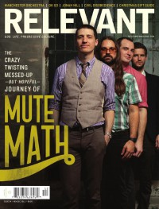

Mute Math
 March 2005 Relevant |
 November 2011 Relevant |
 December 2011 HM |
Media coverage:
- Sep 2004 in CCM "Chapter 1", by Lizza Connor
- Nov 2004 in HM "Mute Math", by John J. Thompson
- Mar 2005 in Relevant "Introducing Mute Math", by Jesse Carey
- Jun 2006 in Christianity Today "Christianity Today Review: Rock Un-Solid", by Rob Moll
- Jun 2007 in CCM "Salt and Light In A Gray World: Mute Math", by John J. Thompson
- Nov 2011 in Relevant "The Confessions of Mute Math", by Kevin Selders
- Dec 2011 in HM "Mute Math", by Doug Van Pelt
- Mar 2012 in HM "Live Report: Jan 27, Stubb's BBQ, Austin, TX", by Doug Van Pelt
- Jan 2016 in Relevant "Mute Math", by Matt Conner
Albums & reviews:
2004: Reset EP
- Nov 2004 in HM, by Doug Van Pelt
- Nov 2004 in Relevant, by Scott Stegenga
- Jan 2005 in CCM, by Anthony DeBarros
- Jan 2005 in YouthWorker, by Dave Urbanski
- Jan 2005 in Worship Leader
2006: MuteMath
- May 2006 in HM, by John J. Thompson
- Sum 2006 in Uprise Zine
- Nov 2006 in Relevant, by Danny Miller
- Jan 2007 in HM, by Doug Van Pelt
2006: Live at the El Rey
2011: Odd Soul
- Oct 2011 in HM, by Doug Van Pelt
- Nov 2011 in CCM Digital, by Matt Conner
- 2012 in Radix, by Dan Ouellette
Award Summary (Nominations / Wins)
Dove Awards- 2005 Dove Awards
- Modern Rock Recorded Song: "Control"
- 2007 Grammy Awards
- Best Short Form Music Video: "Typical"
© 2011 CMnexus. Last updated May 2025. Contact: editor -AT- cmnexus -DØT- org